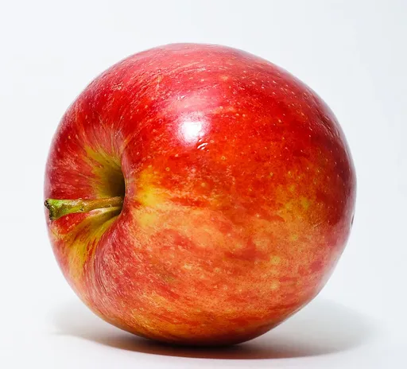
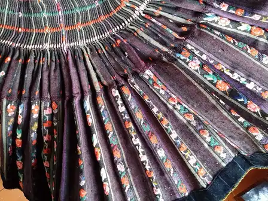
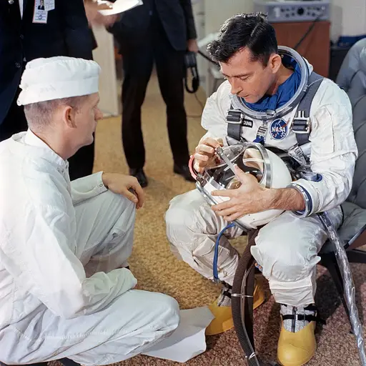
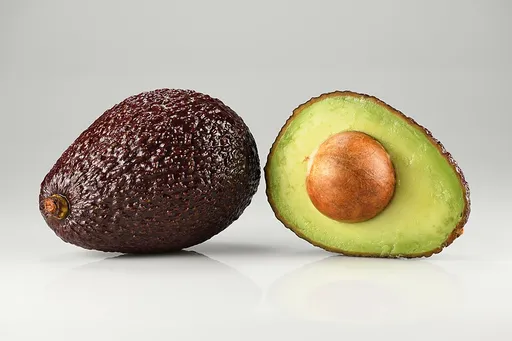
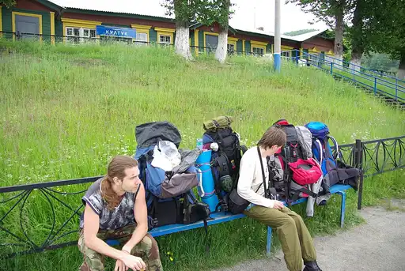
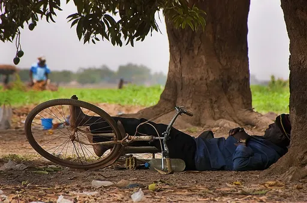
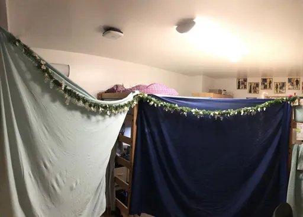

Reject an image by adding its slug to public/charades/charades-easy/reject.txt (append ! to keep it word-only), then re-run node scripts/genimages.mjs.
Anchor anchor CC BY-SA 4.0 · .mw-parser-output .messagebox{margin:4px 0;width:auto;border-collapse:collapse;border:2px solid var(--border-color-progressive,#6485d1);background-color:var(--background-color-neutral-subtle,#fbfcff);color:var(--color-base,#202122);box-sizing:border-box;border-inline-start-width:8px}.mw-parser-output .messagebox.mbox-small{font-size:88%;line-height:1.25em}.mw-parser-output .mbox-warning,.mw-parser-output .mbox-speedy{border:2px solid var(--border-color-error,#b22222);background:var(--background-color-error-subtle,#ffdbdb);border-inline-start-width:8px}.mw-parser-output .mbox-serious,.mw-parser-output .mbox-delete,.mw-parser-output .mbox-stop{border:2px solid var(--border-color-error,#b22222);border-inline-start-width:8px}.mw-parser-output .mbox-issue,.mw-parser-output .mbox-content{border:2px solid #f28500;background:var(--background-color-warning-subtle,#ffe);border-inline-start-width:8px}.mw-parser-output .mbox-query,.mw-parser-output .mbox-style{border:2px solid #f4c430;background:var(--background-color-warning-subtle,#ffe);border-inline-start-width:8px}.mw-parser-output .mbox-shit{border:2px solid #960;border-inline-start-width:8px}.mw-parser-output .mbox-license{border:2px solid #88a;border-inline-start-width:initial}.mw-parser-output .mbox-legal{border:2px solid var(--border-color-notice,#666);background:var(--background-color-base,#fff);border-inline-start-width:8px}.mw-parser-output .mbox-honor{border:2px solid #ca3;background:var(--background-color-warning-subtle,#fcf4db);border-inline-start-width:8px}.mw-parser-output .mbox-growth{border:2px solid #8d4;background:var(--background-color-success-subtle,#d5fdf4);border-inline-start-width:8px}.mw-parser-output .mbox-move{border:2px solid #93c;border-inline-start-width:8px}.mw-parser-output .mbox-protection,.mw-parser-output .mbox-message{border:2px solid var(--border-color-base,#aaa);border-inline-start-width:8px}.mw-parser-output .messagebox .mbox-text{border:none;padding:0.25em 0.9em;width:100%}.mw-parser-output .messagebox .mbox-image{border:none;padding-top:2px;padding-bottom:2px;padding-inline-start:0.9em;padding-inline-end:0;text-align:center}.mw-parser-output .messagebox .mbox-imageright{border:none;padding-top:2px;padding-bottom:2px;padding-inline-start:0;padding-inline-end:0.9em;text-align:center}.mw-parser-output .messagebox .mbox-empty-cell{border:none;padding:0;width:1px}.mw-parser-output .messagebox .mbox-invalid-type{text-align:center}@media(min-width:720px){.mw-parser-output .messagebox{margin:4px 10%}.mw-parser-output .messagebox.mbox-small{clear:right;float:right;margin:4px 0 4px 1em;width:238px}}body.skin--responsive .mw-parser-output table.messagebox img{max-width:none!important}Please respect the Creative Commons Attribution-ShareAlike license that this image is released under. You must use the same license if you share this image and include this credit line wherever you use this image: Y.ssk / Wikimedia Commons / CC BY-SA 4.0 While not required, if you use this image outside of the Wikimedia projects, I would appreciate it if you could leave a quick message on my talk page. · source

Apple apple CC BY 2.0 · Abhijit Tembhekar from Mumbai, India · source

Apron apron CC BY-SA 4.0 · SEN Heritage Looms - Sophia Tsourinaki · source

Astronaut helmet astronaut-helmet Public domain · NASA · source

Avocado avocado CC BY-SA 4.0 · Ivar Leidus · source

Backpack backpack CC BY 2.0 · Artem Svetlov from Moscow, Russia · source
Bell bell Public domain · War Department. The Adjutant General's Office. 3/4/1907-9/18/1947 · source

Bicycle bicycle CC BY-SA 4.0 · This photo was taken by Roman Bonnefoy ( Romanceor [parlons-en]). Feel free to use my pictures, but please credit me as the author (as required by the license). An email or a message would be welcome. More free-licensed pictures on my french Wikipedia account. My website : www.romanceor.net. · source

Blanket blanket CC BY-SA 4.0 · Dextrous Fred · sourceBlowing a kiss blowing-a-kiss CC0 · Alex Blăjan alexb · source